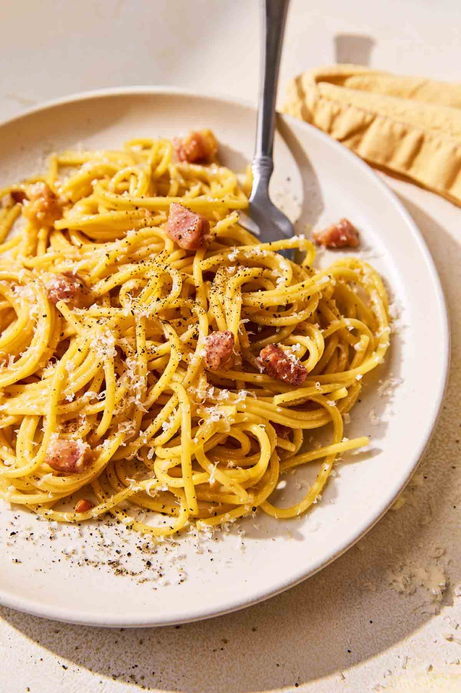

Spaghetti Carbonara
Home

Description
Make this classic Italian dish at home with an American spin on the pork products.
Ingrediants
- 1 box of Spaghetti or Bucatini
- 4 slices of bacon cut into cubes
- 1 packet of panchetta cut into cubes (normally precut from store)
- 4 gloves of garlic
- Generous cup of shredded parmesan
- 3 eggs
Steps
- Fill a large pot with water and add generous amount of salt. Bring water to boil
- Slowly render your bacon and panchetta in a pan on medium/low
- Begin cooking pasta
- Once pork and panchetta are cooked add garlic to the pan and turn down to low
- Whisk eggs and add in parmesan along with heavy dose or black pepper
- Once pasta is al-dente reserve 1 cup of the cooking liquid and strain
- Slowly add pasta water to egg and cheese mixture, stiring gently
- Add egg mixture to pasta and pork. Mix well and serve immediately. Finish with more parmesan.